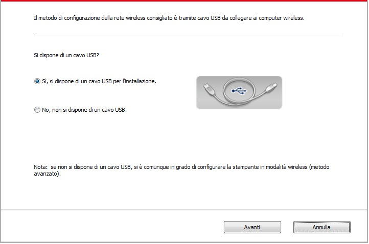
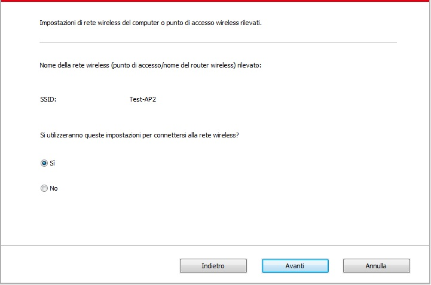
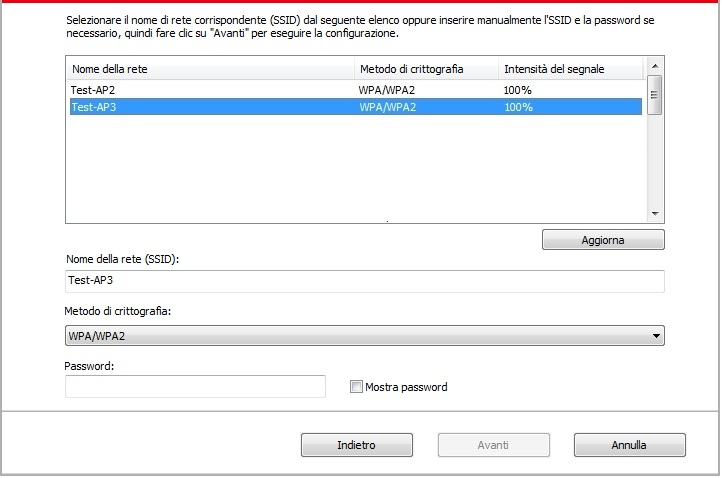
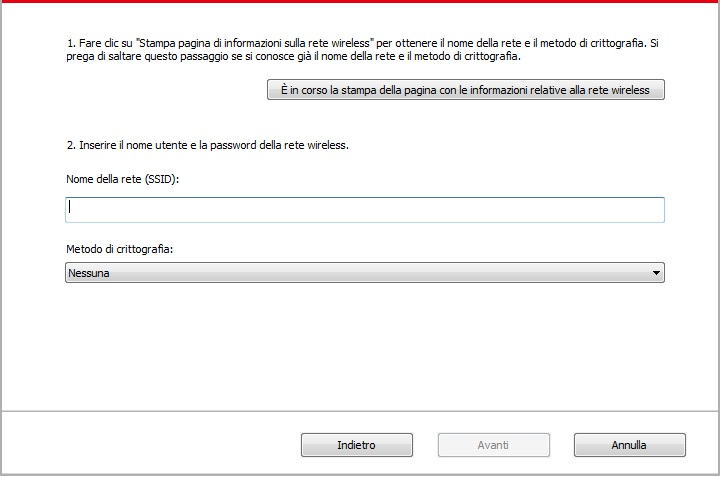
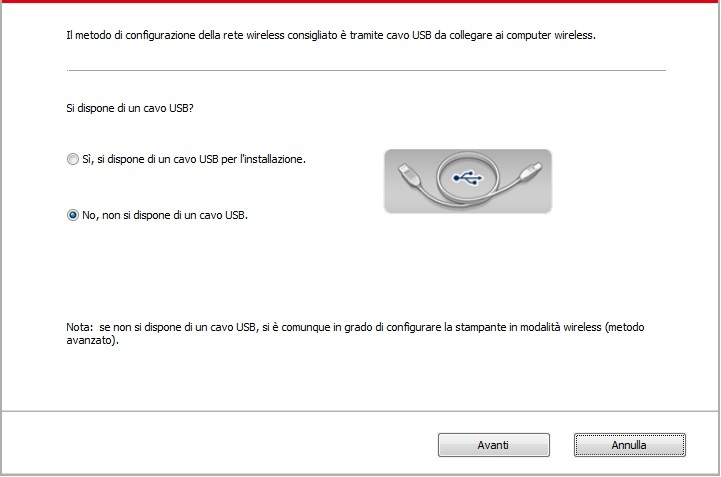
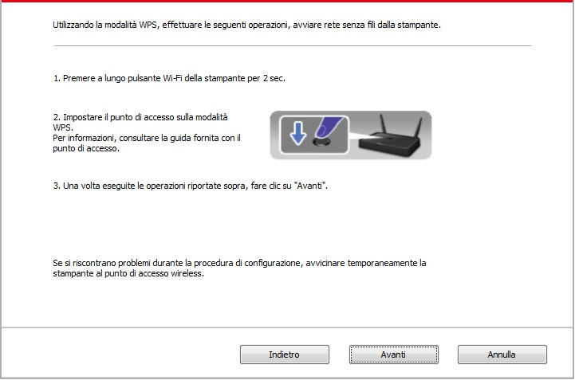
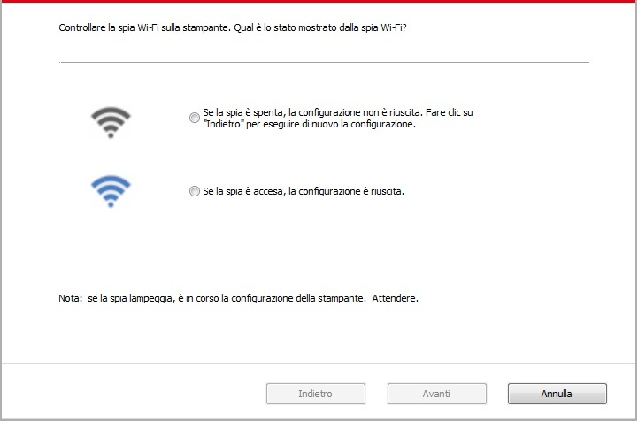

5.Configurazione di rete senza fili (adeguato per il modello con Wi-Fi)
A secondo del modello, la stampante con funzione Wi-Fi supporta due tipi di connessione di rete wireless, il tipo di connessione della struttura di base e il Soft-AP. Generalmente é possibile effettuare una sola connessione alla volta tra computer e stampante. Se avete problemi nel processo di impostazione della rete wireless, vedere il capitolo 5.3 per i problemi comuni nell'impostazione della rete wireless.
 |
Modalità di struttura di base: collegare dispositivi wireless tramite il router collegamento 1. Punto di connessione (router wireless) 2. Stampante di rete senza fili 3. Collegare computer del punto di connessione attraverso la rete wireless 4. Accedere al computer del punto di connessione alla rete cablata "elettorale: collegare dispositivi wireless tramite il router |
|
|
Soft-AP Il computer wireless è connesso direttamente al dispositivo wireless. |

5.1.Modalità di struttura di base
È possibile collegare il computer alla stampante dal punto di connessione (router wireless). Il punto di connessione (router wireless) è Divide in strumento di configurazione della rete wireless e la configurazione Protected Setup Wi-Fi (WPS).
Importante: prima di installare la rete wireless, è necessario conoscere il nome della rete (SSID) e il punto di connessione di password (router wireless) utilizzare in caso di configurazione di rete wireless. Se non siete sicuri, rivolgersi all'amministratore di rete o il produttore del punto di accesso (router wireless).
5.1.1.Strumento di configurazione della rete wireless
Se il computer dispone di driver installato e si collega alla rete wireless, ma la rete wireless non è cambiata, è possibile riconfigurare lo strumento di configurazione della rete wireless.
5.1.1.1.Preparazione in anticipo
1. Punto di connessione (router wireless).
2. Il computer già collegato alla rete.
3. Stampante con la funzione wireless.
5.1.1.2.Metodo dmetodo di configurazione di strumento di rete wireless
1. Rimuovere lo strumento di configurazione wireless nel computer.
1) In Windows: Fare clic sul menu 'Start' - "Tutti i programmi" - 'Pantum'-descrizione della configurazione di rete prodotto-'Outil Wireless' computer.
2) Sistema di Mac: Computer Finder barra dei menu, fare clic su "Vai" - "Applicazioni" - "Pantum" - "Utilities" - "Strumento di configurazione rete wireless".
2. Utilizzare una configurazione di connessione via cavo USB. Nella schermata successiva, selezionare "Sì,si dispne di un cavo USB per l'installazione." Fai clic su "Avanti".

2.1 Il computer è connesso alla rete wireless.
1) tool di configurazione della rete wireless è selezionata per impostazione predefinita di rete wireless attualmente collegata computer, seguire le istruzioni per completare l'interfaccia di configurazione.

 |
Nota: |
• Il nome della rete (SSID) si seleziona dovrebbe essere la stessa con la rete (SSID) del punto di accesso (router wireless) del computer. |
2) Ha bisogno di connettersi ad altre reti wireless di controllo "No" per configurare altre reti wireless, come richiesto per completare la configurazione.

|
Nota: |
• Al momento, la stampante supporta tre modalità di sicurezza: nessuno, WEP e WPA / WPA2. 1) No: senza utilizzare qualsiasi modalità di codifica. 2) WEP utilizza il metodo WEP (Wired Equivalent Privacy), inviare e ricevere dati tramite la chiave di sicurezza. La chiave WEP è sufficiente per la rete codificata di 64 e 128 figure, tra cui numeri e lettere. 3) WPA / WPA2: chiave pre-condivisa è una protezione di connessione Wi-Fi, che codifica per la connessione attrezzature e punto di connessione senza fili con TKIP o AES (WPS-Personal). WPA lunghezza utilizzo / WPA2 è una chiave pre-condivisa (PSK) da 8 a 63 cifre. • La password non visualizzata da scatola di default, se selezionato, verrà visualizzata la password. |
2.2 Computer non è connesso a una rete wireless. Nella schermata successiva, inserire il punto di accesso (router wireless) nel nome di rete SSID (SSID è case-sensitive), e la password come richiesto per completare la configurazione.

|
Nota: |
• Se non si conosce il nome della rete (SSID) del punto di accesso (router wireless), fare clic per stampare la pagina Wireless Network Information 'per vedere il nome della rete (SSID) del punto di connessione ( router wireless) per collegare. • Dopo la configurazione di rete wireless, se la stampante può essere utilizzata normalmente, reinstallare il driver. Si prega di selezionare connessione di rete wireless. |
3. Usare connessione WPS.
Nella schermata successiva, selezionare "No, non si dispone di un cavo USB." Fai clic su "Avanti".

1) Utilizzando la modalità WPS, effettuare le seguenti operazioni, avviare rete senza fili dalla stampante. (Configurazione specifica WPS, vedere il capitolo 5.1.2)

2) Secondo l'indicatore Wi-Fi sullo stato della stampante, si determina se la connessione della stampante è successo. Se la configurazione fallisce, fare clic su "Indietro", la riconfigurazione; se la configurazione è riuscita, fare clic sul pulsante "Fine" per completare la configurazione.

|
Nota: |
• Dopo la configurazione di rete wireless, se la stampante può essere utilizzata normalmente, reinstallare il driver. Si prega di selezionare connessione di rete wireless. |
5.1.2.Configurazione Wi-Fi Protected Setup (WPS)
Se il punto di connessione (router wireless) supporta Wi-Fi Protected Setup (WPS), quindi premere i rispettivi tasti del pannello di controllo della stampante Wi-Fi e il punto di connessione tasto WPS (router wireless) per il collegamento alla stampante di rete wireless.
5.1.2.1.Preparazione in anticipo
1. Il punto di connessione (router wireless) supporta Wi-Fi Protected Setup (WPS).
2. Stampante con la funzione wireless.
5.1.2.2.Metodo di configurazione Wi-Fi Protected Setup (WPS)
1. Aprire il punto di stampante e collegamento dell'alimentazione (router wireless).
2. Assicurarsi che la stampante è in stato pronto.
|
Nota: |
• Se la stampante va in stand-by, premere un tasto qualsiasi pannello di controllo per riattivare la stampante. |
3. Press il pannello di controllo della stampante 'Wi-Fi' per più di 2 secondi fino a quando la stampante senza fili blu lampeggia, quindi rilasciare.
4. Premere il pulsante WPS entro 2 minuti di punto di connessione (router wireless) e il rilascio.
5. Il punto di connessione (router wireless) e la stampante inizierà la connessione di rete wireless, i blu lampada senza fili della stampante lampeggia. Dopo l'accesso, la stampante blu lampada Wi-Fi è sempre attiva. 5. Il punto di connessione (router wireless) e la stampante inizierà la connessione di rete wireless, i blu lampada senza fili della stampante lampeggia. Dopo l'accesso, la stampante blu lampada Wi-Fi è sempre attiva.
Se la connessione non è fatta per più di 2 minuti, la stampante RETOURE stato di pronto, la spia Wi-Fi si spegne, e il Protected Setup Wi-Fi (WPS) non riesce. Se riconnettersi di nuovo, ripetere i passaggi 3-4 sopra.
|
Nota: |
• Dopo il successo Wi-Fi Protected Setup (WPS), se si desidera stampare la modalità di rete wireless, installare il driver. Si prega di selezionare Connessione di rete senza fili. |
5.1.3.Come disattivare la rete Wi-Fi collegato
Seguire i passaggi precedenti per completare la modalità infrastruttura Wi-Fi collegato il controllo dello stato Wi-Fi spia sul pannello si accende , quindi premere e tenere premuto questo pulsante per 2 secondi per disconnettere la connessione Wi-Fi (lampada Wi-Fi si spegne ).
5.2.Modalità hot-spot Wi-Fi
Potete (via wireless) creare una connessione tra computer con funzione di rete wireless e stampante di rete wireless senza utilizzare il punto di accesso.
5.2.1.Preparazione in anticipo
1.Stampante con funzione hot-spot Wi-Fi.
2.Computer con funzione di rete wireless.
5.2.2. Connessione accesso Wi-Fi
abilita l'accesso alla Wi-Fi Hot della stampante prima di collegare l'accesso all'hot spot della stampante. Per questo scopo, accedere al server del web incorporato , cliccare su "impostazioni"-"impostazioni wireless"-"accesso internet wireless" per impostare lo status basico dell'accesso come "abilitato".
5.2.3. Configurazione hotspot Wi-Fi
Quando è attivo l’hotspot wireless della stampante, l’utente può collegarlo direttamente mediante la ricerca. L’hotspot wireless è attivato come impostazione predefinita e la password predefinita è “12345678”. Il SSID e la password specifici della stampante sono reperibili nella pagina Informazioni di configurazione Wi-Fi, stampabile selezionando Stampa configurazione Wi-Fi. Dopo aver stabilito la connessione, la configurazione può essere completata secondo il metodo di configurazione Web.
5.3.Domande frequenti nella configurazione di rete wireless
1. La stampante non si trova
• La potenza del computer, il punto di connessione (router wireless) o la stampante è già accesa.
• Se il cavo USB è già connesso tra il computer e la stampante.
• La stampante è compatibile con la connessione di rete wireless o no.
2. Se ci si connette alla rete, il nome della rete (SSID) non può essere trovata
• Assicurarsi che il punto di connessione del pulsante di accensione (router wireless) sia acceso.
• La stampante non trova il nome della rete (SSID) del punto di accesso (router wireless) per collegare, controllare il nome della rete (SSID) del punto di connessione e riprovare la connessione.
• Quando il punto di configurazione della connessione (router wireless), è necessario riconfigurare la stampante senza una rete wireless.
3. Collegamento non riuscito
• Si prega di verificare se il punto di connessione (router wireless) e la modalità di protezione della stampante e password sono a posto.
• Controllare ricezione dell'antenna intorno stampante. Se il router è lontano dalla stampante o ci sono ostacoli in mezzo, questo può influenzare la ricezione del segnale.
• Spegnere il punto di connessione (router wireless) e la stampante, riavviare e configurare.
4. Si verifica un problema quando si utilizza la stampante in rete, controllare quanto segue:
• Assicurarsi che il software firewall sta bloccando la comunicazione. Se il computer e la stampante siano collegati alla stessa rete, ma ciò non può essere trovato, è possibile che il software firewall blocca la comunicazione. Si prega di consultare il manuale d'uso del software Firewall, chiudere il software firewall e riprovare per individuare la stampante.
• Controllare l'assegnazione degli indirizzi IP della stampante sia corretto. È possibile stampare la pagina di informazioni sulla stampante per verificare l'indirizzo IP.
• Fare riferimento ai seguenti passaggi per controllare che la stampante e il Computer siano collegati alla stessa rete.
1）Selezionare "prompt di comando" come mostrato sotto.
a. Sistema Windows 8/10: Selezionare il tasto "Cerca" nel Menu Start e inserire "prompt di comando" nella barra di ricerca, poi premere il tasto "Invio" sulla tastiera.
b. Windows 7/Vista/Server 2008: cliccare il menu "start"-"Tutte le procedure"-"Attachment"-"prompt di comando".
2）Inserire il pin e l'indirizzo IP nella finestra popup, e premere il tasto "Invio".
Per esempio: pin XXX.XXX.XXX.XXX(“XXX.XXX.XXX.XXX”è l'indirizzo IP della stampante)
3）Se l'RTT non è indicato nella finestra, fare riferimento al Cap. 5 per riconfigurare la rete wireless della stampante.
|
Nota: |
• Consultare il manuale dell'utente o consultare il produttore per le informazioni di punto di connessione (router wireless). |